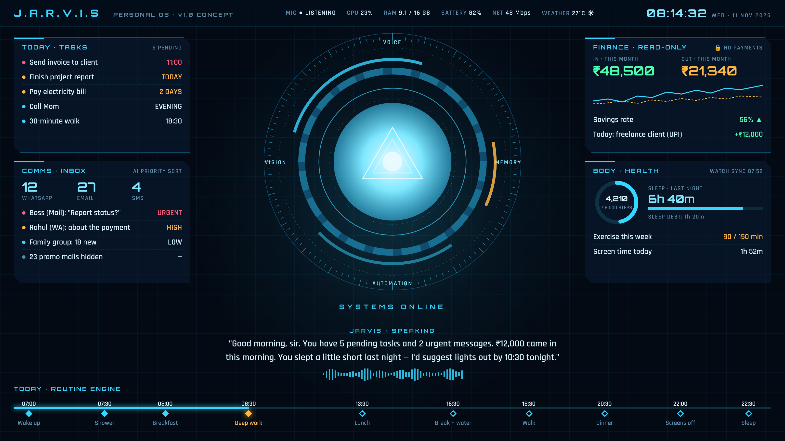

আমরা এমন একটা JARVIS বানাব যেটা ল্যাপটপ খুললেই নিজে থেকে চালু হবে, তোমার সাথে ইংলিশে কথা বলবে (ElevenLabs-এর ভয়েসে), আর তোমার পুরো দিনটা এক স্ক্রিনে দেখাবে: কী কাজ বাকি, কে মেসেজ করেছে, কোন মেল জরুরি, কোথা থেকে কত টাকা ঢুকল, কত খরচ হলো, কতটা ঘুমিয়েছ, কতটা হেঁটেছ। আর কখন খেতে হবে, কখন স্নান, কখন ঘুমাতে যেতে হবে, সেটাও ঠিক সময়ে মনে করিয়ে দেবে।
15
ফিচার মডিউল
6
ধাপে (Phase) কাজ
~4 wk
প্রথম চালু ভার্সন (MVP)
~10–12
সপ্তাহে পুরো v1 (আনুমানিক)
৪টা নিয়ম, যার উপর পুরো সিস্টেম দাঁড়িয়ে
01 · ENGLISH-FIRST
UI, কমান্ড, নোটিফিকেশন, ভয়েস সবকিছু ইংলিশে। ভয়েস তৈরি হবে ElevenLabs দিয়ে, JARVIS-এর জন্য আলাদা করে ডিজাইন করা নিজস্ব কণ্ঠে। আমাদের প্ল্যানিং-এর কথাবার্তা বাংলায় চলবে।
02 · LOCAL-FIRST & PRIVATE
তোমার সব ডেটা তোমার ল্যাপটপেই, এনক্রিপ্ট করে রাখা থাকবে। ক্লাউড AI-এর কাছে যাবে শুধু কাজের জন্য যতটুকু দরকার, আর অ্যাকাউন্ট নম্বরের মতো জিনিস মাস্ক করে।
03 · READ ALL, ACT WITH PERMISSION
সব দেখবে, সব বুঝবে, ড্রাফট বানিয়ে রাখবে। কিন্তু মেসেজ বা মেল পাঠানোর আগে তোমার একটা "Yes" লাগবে। চাইলে কিছু trusted contact-এর জন্য এই নিয়ম শিথিল করা যাবে।
04 · MONEY = READ-ONLY
টাকার হিসাব পুরোটা জানবে: আয়, খরচ, সেভিংস। কিন্তু টাকা পাঠানো বা পেমেন্ট কোনোদিন করবে না। এটা কোডের ভিতরেই লক করা থাকবে। টাকা সবসময় তুমি নিজে পাঠাবে।
এই ডকুমেন্টে যা আছে
01ল্যাপটপ খুললেই কী হবে: দৈনিক অভিজ্ঞতা
02HUD ইন্টারফেস: কেমন দেখতে হবে
03১৫টা ফিচার মডিউল
04পারমিশন সিস্টেম: কী করবে, কী করবে না
05ডেটা কোথা থেকে আসবে
06সিস্টেম আর্কিটেকচার
07টেকনোলজি স্ট্যাক
08রোডম্যাপ: কোন ধাপে কী বানাব
09মাসিক খরচ
10যা যা লাগবে (হার্ডওয়্যার ও অ্যাকাউন্ট)
11সীমাবদ্ধতা ও ঝুঁকি: সোজাসুজি
12শুরুর আগে তোমার সিদ্ধান্ত
13পরের ধাপ ও রিসার্চ সোর্স
01DAILY EXPERIENCE
ল্যাপটপ খুললেই কী হবে
JARVIS একটা ব্যাকগ্রাউন্ড সার্ভিস হিসেবে সবসময় চালু থাকবে (Windows/macOS স্টার্টআপে অটো-স্টার্ট)। তুমি ল্যাপটপ খুলে আনলক করলেই এই ক্রমে কাজ হবে:
T+0s · WAKEল্যাপটপ আনলক হতেই JARVIS জেগে ওঠে। HUD-এর বুট অ্যানিমেশন শুরু হয়।
T+1s · PRESENCEওয়েবক্যামে তোমাকে চিনে নেয় (অপশনাল)। অন্য কেউ হলে ব্রিফিং দেবে না।
T+2s · SYNCGmail, WhatsApp, SMS, ব্যাংক/UPI অ্যালার্ট, ক্যালেন্ডার, ঘড়ি বা ফোন থেকে রাতের ঘুম আর হাঁটার ডেটা, আবহাওয়া: সব একসাথে টেনে আনে।
T+3s · TRIAGEAI সবকিছু Urgent / High / Low-এ সাজায়। প্রোমো আর স্প্যাম লুকিয়ে ফেলে, শুধু সংখ্যাটা দেখায়।
T+4s · BRIEFINGHUD ভরে ওঠে আর JARVIS ৩০–৬০ সেকেন্ডের একটা ভয়েস ব্রিফিং দেয়।
THEN · TALKতুমি মুখে উত্তর দাও: "Read the urgent ones", "Reply to Rahul…", "Plan my day"।
SAMPLE MORNING BRIEFING · ENGLISH VOICE
"Good morning, sir. It's 8:14, 27 degrees and sunny.
You slept 6 hours 40 minutes, about 80 minutes short of your target.
Five tasks today. The client invoice is due at 11.
Two messages need you: your boss is asking about the report, and Rahul wrote about a payment.
₹12,000 came in from your freelance client via UPI. Spending this month is ₹21,340, within budget.
Shall I read the urgent messages first?"
সারাদিন JARVIS নিজে থেকে যা বলবে (Proactive Signals)
10:45
"Sir, the client invoice is due in 15 minutes."
ডেডলাইনের আগে রিমাইন্ডার
13:30
"Lunch time. You've been at the desk for 2 hours 40 minutes."
খাওয়ার সময় আর একটানা বসে থাকার হিসাব
LIVE
"₹4,999 debited at Amazon. That's your third shopping order this week."
খরচের অ্যালার্ট আর অভ্যাসের প্যাটার্ন
LIVE
"Your mother called twice. Want me to remind you after this meeting?"
ফোনের নোটিফিকেশন থেকে জরুরি জিনিস তুলে আনা
18:30
"You're at 4,200 steps. A 30-minute walk now gets you to your goal."
হাঁটা আর এক্সারসাইজের লক্ষ্য
22:00
"Screens off in 30 minutes, sir. Tomorrow starts at 7."
ঘুমের আগে wind-down সিগন্যাল
22:30
"Bedtime. Eight hours tonight clears your sleep debt."
ঘুমের ঘাটতি হিসাব করে শোয়ার সময়
SUN 20:00
"Your weekly report is ready. Three things to improve this week…"
সাপ্তাহিক রিপোর্ট
02INTERFACE CONCEPT
HUD ইন্টারফেস: কেমন দেখতে হবে
তোমার পাঠানো ছবির স্টাইলটাই নিচ্ছি: গাঢ় নীল ব্যাকগ্রাউন্ড, সায়ান লাইট, মাঝখানে জ্বলজ্বলে "কোর"। তবে ছবির প্যানেলগুলো শুধু CPU-গ্রাফ আর সাজসজ্জা, আমাদের প্রতিটা প্যানেলে থাকবে তোমার আসল দরকারি তথ্য। নিচে প্রথম কনসেপ্ট (নমুনা ডেটা দিয়ে):

কনসেপ্ট মকআপ · নমুনা ডেটা। ফাইনাল ভার্সনে কোর 3D-তে ঘুরবে, কথা বললে পালস করবে, প্যানেলগুলো অ্যানিমেট হবে।
Top bar: সময়, আবহাওয়া, CPU/RAM/ব্যাটারি/নেট, মাইক চালু কিনা।
Routine timeline: সারাদিনের রুটিন আর এখন তুমি কোথায় আছ।
Voice strip: JARVIS যা বলছে তার লাইভ সাবটাইটেল।
ইন্টারফেসকে আরও অ্যাডভান্স করতে যা যোগ হবে
FULL HUD
ফুলস্ক্রিন। সকালের ব্রিফিং বা "Show me everything" বললে।
WIDGET
কাজের সময় কোণে ছোট কোর আর জরুরি অ্যালার্ট।
FOCUS
শুধু এখনকার কাজ আর টাইমার, ডিস্ট্র্যাকশন ব্লক।
NIGHT
রাতে লাল-কমলা টোন, কম আলো, চোখে কম চাপ।
আরও থাকবে: Three.js দিয়ে 3D কোর ও পার্টিকেল ইফেক্ট, প্যানেলে ক্লিক করলে বড় হয়ে ডিটেইল ভিউ, কিবোর্ড শর্টকাট, মাল্টি-মনিটর সাপোর্ট, আর স্মুথ 60fps অ্যানিমেশন।
03FEATURE MODULES
১৫টা মডিউল: JARVIS কী কী পারবে
তুমি যা যা বলেছ সব এখানে আছে। তার সাথে রিসার্চ করে আরও কিছু দরকারি জিনিস যোগ করেছি। প্রতিটা কার্ডের উপরে লেখা আছে কোন Phase-এ বানাব (রোডম্যাপ: সেকশন 08)।
M01PHASE 1
CORE BRAIN
Claude (Opus 5.5) মাথা হিসেবে কাজ করবে। সাধারণ ইংলিশে বলা কথা বুঝবে, নিজে প্ল্যান করে একাধিক ধাপের কাজ করবে।
"Find my landlord's last email and remind me to pay rent on the 5th."
মেল, মেসেজ, ক্যালেন্ডার, ফাইল, সিস্টেম, সবকিছু ব্রেনের সাথে "টুল" হিসেবে যুক্ত থাকবে।
কথার প্রসঙ্গ মনে রাখবে, যেমন "reply to him" বললে বুঝবে কাকে।
M02PHASE 1
VOICE
Wake word "Hey Jarvis"। অফলাইনে, ফ্রিতে চলবে (openWakeWord-এ রেডিমেড মডেল আছে)।
কথা থেকে টেক্সট: ElevenLabs Scribe (রিয়েলটাইম), অথবা লোকাল faster-whisper (ফ্রি)।
JARVIS-এর কণ্ঠ: ElevenLabs Flash v2.5 স্ট্রিমিং, যাতে উত্তর আসে দ্রুত। Voice Design দিয়ে নিজস্ব শান্ত "British butler" কণ্ঠ।
কথার মাঝে থামিয়ে দেওয়া যাবে (barge-in)। push-to-talk হটকি আর টাইপ করে কথা বলার অপশনও থাকবে।
M03PHASE 1
HUD INTERFACE
Full HUD, Widget, Focus, Night: চারটে মোড।
লাইভ ডেটা, অ্যানিমেটেড 3D কোর, অ্যালার্টে রং বদল।
ক্লিক বা ভয়েস দিয়ে যেকোনো প্যানেল খোলা: "Show me my spending."
বাইরে থাকলেও Telegram বট দিয়ে JARVIS-এর সাথে কথা: "What's pending today?"
M15PHASE 6
POWER-UPS
Smart home (Home Assistant): "Jarvis, lights off."
Screen memory: "What was I working on yesterday at 3 pm?"
মিটিং ট্রান্সক্রিপশন + সারাংশ, জার্নাল আর মুড চেক-ইন।
রসিদ স্ক্যান (OCR) করে খরচে যোগ। লোকাল AI দিয়ে অফলাইনে বেসিক কমান্ড।
04PERMISSION SYSTEM
কী করবে, আর কী কখনো করবে না
JARVIS-এর ক্ষমতা যত বেশি, নিয়মও তত পরিষ্কার হওয়া দরকার। প্রতিটা কাজ ৫টা লেভেলের একটায় পড়বে। এই লেভেল AI নিজে বদলাতে পারবে না, এটা কোডে বাঁধা "Permission Gate"।
অফিসিয়াল অ্যাপ ছোঁয়া হয় না, তাই ban-এর ভয় নেই। শুধু নোটিফিকেশনে যা আসে সেটাই দেখা যাবে।
WhatsApp: পাঠানো
অফিসিয়াল click-to-chat লিংক (wa.me) দিয়ে WhatsApp Desktop-এ চ্যাট খুলে, মেসেজ বসিয়ে, তোমার "Yes"-এর পর Send চাপা
MEDIUM
কম সংখ্যায়, সাধারণ ব্যবহারের মতো, তাই নিরাপদ।
SMS
Android কম্প্যানিয়ন অ্যাপ
MEDIUM
iPhone-এ সম্ভব না (Apple অনুমতি দেয় না)।
ব্যাংক / UPI
ব্যাংকের SMS + ইমেল অ্যালার্ট + UPI অ্যাপ নোটিফিকেশন পার্স করা। মাসে একবার স্টেটমেন্ট ইমপোর্ট করে মিলিয়ে নেওয়া
MEDIUM
প্রতি ব্যাংকের জন্য আলাদা parser + AI fallback। ওপেন-সোর্স রেফারেন্স আছে (PennyWise AI, Cashiro)।
ঘুম / হাঁটা / এক্সারসাইজ
Android: Health Connect (কম্প্যানিয়ন অ্যাপ দিয়ে)। iPhone: Apple Health থেকে Shortcuts অটোমেশনে এক্সপোর্ট
MEDIUM
পুরনো Google Fit API 2026-এ বন্ধ হচ্ছে, তাই Health Connect-ই ঠিক পথ। ঘড়ি/ব্যান্ড থাকলে ঘুমের ডেটা অনেক ভালো পাওয়া যায়।
স্ক্রিন টাইম
ActivityWatch (ওপেন সোর্স, লোকাল API)
EASY
কোন অ্যাপ/সাইটে কত সময়, সব ল্যাপটপেই থাকে।
আবহাওয়া / নিউজ
Open-Meteo (ফ্রি), নিউজ RSS/API
EASY
—
⚠ WHAT WE AVOID ON PURPOSE
অনানুষ্ঠানিক WhatsApp লাইব্রেরি (Baileys, whatsapp-web.js): এগুলো দিয়ে পুরো চ্যাট হিস্ট্রি পড়া যায়, কিন্তু WhatsApp-এর নিয়ম ভাঙে। নম্বর চিরতরে ban হয়ে যেতে পারে, কোনো সতর্কতা ছাড়াই। তোমার মেইন নম্বরে এই ঝুঁকি নেব না।
Account Aggregator (ব্যাংকের অফিসিয়াল ডেটা-শেয়ারিং): এতে RBI-রেগুলেটেড প্রতিষ্ঠান হতে হয়, ব্যক্তিগত প্রজেক্টে পাওয়া যায় না। তাই অ্যালার্ট পার্সিং-ই আমাদের পথ।
06ARCHITECTURE
সিস্টেম আর্কিটেকচার
তিনটে ভাগ: বাঁদিকে যেখান থেকে তথ্য আসে, মাঝখানে ল্যাপটপে চলা JARVIS Core, ডানদিকে যেভাবে JARVIS তোমার সাথে কথা বলে বা কাজ করে।
একটা কমান্ড ভিতরে ভিতরে কীভাবে চলে
উদাহরণ: "Hey Jarvis, reply to Rahul that I'll call him at six."
1 · WAKEল্যাপটপেই wake word ধরা পড়ে, বাইরে কিছু যায় না।
2 · HEARSpeech-to-text তোমার কথাকে টেক্সট বানায়।
3 · THINKClaude বোঝে কাজটা কী, WhatsApp connector দিয়ে Rahul-এর শেষ মেসেজ খোঁজে, রিপ্লাই ড্রাফট করে।
6 · REPORTঅডিট লগে লেখে, HUD আপডেট করে, ElevenLabs ভয়েসে বলে "Sent."
07TECH STACK
টেকনোলজি স্ট্যাক
লেয়ার
যা ব্যবহার করব
কেন
ডেস্কটপ অ্যাপ (HUD)
Tauri 2 + React + TypeScript + Three.js
Electron-এর চেয়ে অনেক কম RAM খায়, সারাদিন চালু থাকার জন্য ভালো। WebGL-এ সমস্যা হলে Electron-এ যাওয়া যাবে।
কোর সার্ভিস
Python 3.12 + FastAPI + WebSocket
ভয়েস আর AI-এর সব লাইব্রেরি Python-এ সবচেয়ে ভালো পাওয়া যায়।
AI ব্রেন
Claude API · Claude Opus 5.5
টুল ব্যবহার, একাধিক ধাপের প্ল্যানিং, লম্বা কনটেক্সট। prompt caching দিয়ে খরচ কমানো যায়।
Wake word
openWakeWord ("hey jarvis")
ফ্রি, অফলাইন, কোনো API key লাগে না।
কথা → টেক্সট
ElevenLabs Scribe · or faster-whisper
ElevenLabs-এ রিয়েলটাইম, আর whisper লোকালে ফ্রি। দুটোই টেস্ট করে ঠিক করব।
টেক্সট → কণ্ঠ
ElevenLabs Flash v2.5 (streaming)
কম ল্যাটেন্সি, প্রাকৃতিক ইংলিশ। Voice Design দিয়ে JARVIS-এর নিজস্ব কণ্ঠ।
ডেটাবেস
SQLite + SQLCipher + sqlite-vec
এক ফাইলে সব, এনক্রিপ্টেড। মেমরি সার্চের জন্য vector index।
শিডিউলার
APScheduler
রিমাইন্ডার, ব্রিফিং, রিপোর্টের টাইমিং।
ফোন কম্প্যানিয়ন
Android app (Kotlin)
নোটিফিকেশন, SMS, Health Connect। শুরুতে দ্রুত টেস্টের জন্য MacroDroid/Tasker দিয়েও চালানো যায়।
স্ক্রিন টাইম
ActivityWatch
ওপেন সোর্স, লোকাল REST API।
চার্ট / রিপোর্ট
ECharts + HTML → PDF
সুন্দর চার্ট, একই ডিজাইনে PDF রিপোর্ট।
সিক্রেটস
Windows Credential Manager / macOS Keychain
API key কোডে বা ফাইলে খোলা থাকবে না।
রিমোট
Telegram Bot API
ফ্রি, যেকোনো জায়গা থেকে JARVIS-কে মেসেজ।
08ROADMAP
কোন ধাপে কী বানাব
একসাথে সব না বানিয়ে ধাপে ধাপে এগোব। প্রতিটা Phase শেষে তুমি হাতে-কলমে চালিয়ে দেখবে, তারপর পরেরটা। সময় আনুমানিক, তোমার টেস্টিং আর ফিডব্যাকের উপর নির্ভর করবে।
PHASE
W1
W2
W3
W4
W5
W6
W7
W8
W9
W10
W11
W12
P0 · SETUPঅ্যাকাউন্ট, key, স্ট্রাকচার
P1 · COREHUD + ভয়েস + ব্রেন
P2 · COMMSমেল, WhatsApp, SMS
P3 · MONEYআয়-ব্যয়, বাজেট
P4 · BODYহেলথ + রুটিন
P5 · INSIGHTরিপোর্ট + মেমরি
P6 · POWER-UPSচলতেই থাকবে
◆ MVP = END OF WEEK 4 · ভয়েস + HUD + মেল + WhatsApp + ক্যালেন্ডার + মর্নিং ব্রিফিং
PHASE
যা তৈরি হবে
শেষে তুমি যা করতে পারবে
P0 · SETUP 2–3 দিন
তোমার উত্তর (সেকশন 12), Anthropic + ElevenLabs + Google Cloud অ্যাকাউন্ট ও key, প্রজেক্ট স্ট্রাকচার, JARVIS-এর কণ্ঠ ডিজাইন
JARVIS-এর ভয়েস শুনে পছন্দ করা
P1 · CORE ~2 সপ্তাহ
HUD অ্যাপ, "Hey Jarvis" ভয়েস লুপ, Claude ব্রেন + টুল, সিস্টেম স্ট্যাটস, আবহাওয়া, অটো-স্টার্ট, Gmail + Calendar দিয়ে প্রথম মর্নিং ব্রিফিং
HUD-এ একটা "API usage meter" থাকবে আর তুমি মাসিক লিমিট সেট করবে। লিমিটের কাছে গেলে JARVIS আগে থেকে জানাবে। পিছনে চলা মেসেজ-বাছাইয়ের কাজে ছোট, সস্তা মডেল (যেমন Claude Haiku 5.5) দিলে খরচ অনেক কমে। সেটা চাইবে কিনা তোমার সিদ্ধান্ত। দাম বদলাতে পারে, শুরুর আগে অফিসিয়াল পেজে মিলিয়ে নেব।
10REQUIREMENTS
যা যা লাগবে
LAPTOP
Windows 11 বা macOS। 16 GB RAM ভালো (লোকাল whisper না চালালে 8 GB-তেও চলবে)। ভালো মাইক বা হেডসেট। ওয়েবক্যাম (অপশনাল, presence-এর জন্য)। ইন্টারনেট, কারণ ব্রেন আর ভয়েস ক্লাউডে চলে।
PHONE
Android হলে সবচেয়ে ভালো। iPhone হলে অন্য অ্যাপের নোটিফিকেশন বা SMS পড়া যায় না (Apple অনুমতি দেয় না)। তখন WhatsApp Desktop আর ব্যাংকের ইমেল অ্যালার্ট দিয়ে কাজ চালাব।
WATCH / BAND (OPTIONAL)
ঘুমের ডেটা ঠিকঠাক পেতে খুব কাজে লাগে। Health Connect-এ সিঙ্ক হয় এমন যেকোনোটা চলবে (Samsung, Pixel/Fitbit, Mi/Amazfit ইত্যাদি)। তোমার মডেল দেখে নিশ্চিত করব।
ACCOUNTS & KEYS
Anthropic API key, ElevenLabs API key, Google Cloud প্রজেক্ট (Gmail/Calendar OAuth), Telegram বট (অপশনাল)। সেটআপের প্রতিটা স্টেপ আমি দেখিয়ে দেব।
11LIMITS & RISKS
সীমাবদ্ধতা ও ঝুঁকি: সোজাসুজি
শুরুতেই পরিষ্কার থাকা ভালো, কী সম্ভব আর কী সম্ভব না:
বিষয়
বাস্তবতা ও আমাদের সমাধান
WhatsApp
পার্সোনাল অ্যাকাউন্টের অফিসিয়াল API নেই। নোটিফিকেশনে যা আসে সেটাই পড়তে পারব: পুরনো চ্যাট হিস্ট্রি না, আর mute করা চ্যাট না (যদি না ওগুলোর নোটিফিকেশন চালু রাখো)। বিনিময়ে নম্বর ban হওয়ার কোনো ঝুঁকি নেই।
ব্যাংক ডেটা
ব্যক্তিগত API নেই, তাই অ্যালার্ট পার্স করব। ব্যাংক মেসেজের ফরম্যাট বদলালে parser আপডেট লাগবে। AI fallback থাকায় বেশিরভাগ সময় নিজেই সামলে নেবে।
হেলথ ডেটা
ল্যাপটপ নিজে স্টেপ গুনতে পারে না। ফোন সাথে রাখতে হবে, আর ঘুমের জন্য ঘড়ি/ব্যান্ড পরে ঘুমোলে ডেটা ভালো হয়।
মুভির JARVIS
হলোগ্রাম, স্যুট বা পুরোপুরি স্বাধীন AI এখনো বাস্তবে নেই। কিন্তু ভয়েস, HUD, নিজে থেকে সিগন্যাল দেওয়া, সব জেনে থাকা: এই অভিজ্ঞতাটা খুব কাছাকাছি হবে।
কণ্ঠ
মুভির অভিনেতার আসল কণ্ঠ ক্লোন করা আইনত আর নৈতিকভাবে ঠিক না। তাই ElevenLabs Voice Design দিয়ে একই রকম শান্ত, ভদ্র, British-butler ধাঁচের নিজস্ব কণ্ঠ বানাব।
ইন্টারনেট
Claude আর ElevenLabs ক্লাউডে চলে। নেট না থাকলে শুধু বেসিক কাজ (রিমাইন্ডার, সিস্টেম কন্ট্রোল, আগের ডেটা দেখা) চলবে।
প্রাইভেসি
ক্লাউড AI-কে শুধু দরকারি অংশ পাঠানো হবে। অ্যাকাউন্ট নম্বর মাস্ক করা থাকবে। OTP কখনো পাঠানো হবে না।
খরচ
যত বেশি কথা, তত API খরচ। usage meter আর মাসিক লিমিট দিয়ে নিয়ন্ত্রণে রাখব।
12YOUR DECISIONS
শুরুর আগে তোমার কাছ থেকে যা জানা দরকার
এগুলোর উত্তর পেলেই Phase 0 শুরু করতে পারব। যেটা জানো না, "পরে বলব" লিখে দিও। আমি ডিফল্ট ধরে এগিয়ে যাব।
01
ল্যাপটপের OS কোনটা?
Windows 11 / macOS / Linux, আর RAM কত?
02
ফোন Android না iPhone? মডেল কী?
WhatsApp/SMS/হেলথ ডেটা কীভাবে আনব সেটা এর উপর নির্ভর করে।
03
স্মার্টওয়াচ বা ফিটনেস ব্যান্ড আছে?
থাকলে কোন কোম্পানি/মডেল।
04
কোন ব্যাংক আর কোন UPI অ্যাপ ব্যবহার করো?
ব্যাংক অ্যালার্ট SMS-এ আসে, ইমেলে, নাকি দুটোতেই? টাকার আয়ের মূল উৎস কী কী?
05
ক'টা Gmail অ্যাকাউন্ট? কাজ আর ক্যালেন্ডার কোথায় রাখো?
Google Calendar/Tasks, Todoist, Notion, নাকি এখনো কিছুই না?
সবসময় কনফার্ম করে পাঠাবে, নাকি কিছু trusted contact-এ সরাসরি?
08
JARVIS-এর কণ্ঠ কেমন চাও?
British butler / American / গভীর / নারী কণ্ঠ। Wake word "Hey Jarvis" চলবে? তোমাকে কী বলে ডাকবে: "sir", তোমার নাম, নাকি অন্য কিছু?
09
API-র জন্য মাসিক বাজেট কত রাখতে চাও?
সেকশন 09 দেখে একটা লিমিট বলো, ওই অনুযায়ী সেটআপ করব।
10
তোমার দিনের রুটিন আর লক্ষ্য কী?
কখন উঠতে চাও, অফিস/কলেজের সময়, খাবারের অভ্যাস, ঘুম আর এক্সারসাইজের লক্ষ্য (যেমন রোজ 8,000 স্টেপ, সপ্তাহে 150 মিনিট এক্সারসাইজ)।
11
ফিচার যোগ বা বাদ?
১৫টা মডিউলের মধ্যে কোনটা আগে চাও, কোনটা লাগবে না, বা নতুন কিছু চাও?
13NEXT STEPS
পরের ধাপ
STEP 1
PDF-টা পড়ো। সেকশন 12-র প্রশ্নগুলোর উত্তর দাও।
STEP 2
কিছু যোগ বা বাদ দিতে চাইলে বলো, প্ল্যান আপডেট করে দেব।
STEP 3 · GO
"শুরু করো" বললেই Phase 0 আর Phase 1 শুরু।
ARESEARCH SOURCES
রিসার্চে যা দেখেছি
প্ল্যান বানানোর সময় এই সোর্সগুলো দেখা হয়েছে (নভেম্বর 2026)। কিছু তথ্য থার্ড-পার্টি সাইট থেকে নেওয়া। দাম আর তারিখগুলো কাজ শুরুর আগে অফিসিয়াল পেজে মিলিয়ে নেব।